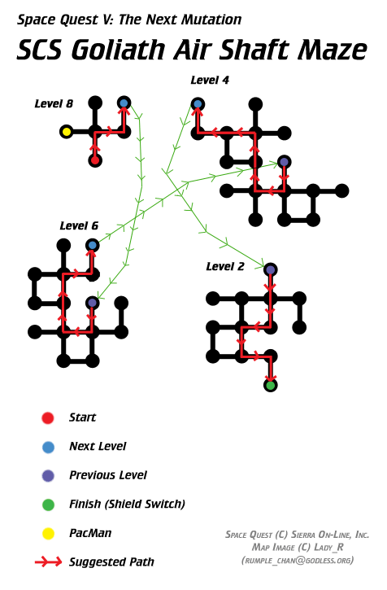

Space Quest V
A walkthrough for Space Quest V, the 1993 Sierra adventure game. Point values are shown with the running total where provided by the guide.
Overview & Controls
| Key | Function |
|---|---|
| F2 | Sound on/off |
| F5 | Save |
| F7 | Load |
| Ctrl+Q | Quit |
Point totals in parentheses show the points earned and the expected running total. The original guide warns of timing problems on modern PCs and recommends DOSBox, older hardware, or unofficial SCI fixes, particularly for the Cliffy rescue sequence.
Walkthrough
Academy
- Watch or skip the introduction. At StarCon Academy, go south three times and enter the classroom on the right. (5, 5)
- During the SAT, look at the left alien's test when the anti-cheat android is looking away. Answers: 1-D, 2-E, 3-E, 4-C, 5-E, 6-C, 7-E, 8-D, 9-A, 10-A. (5, 10)
- After the test, go south and enter the door right of the blob. Take the Scrub-O-Matic and cones. (10, 20) (10, 30)
- Go south, enter the right-hand corridor, and use the elevator. Put the cones and Scrub-O-Matic on the crest and clean it completely. (50, 80)
- After the scene, return to the corridor and go west and south. Check the panel near the cadets to receive captain's training after a perfect SAT. (100, 180)
SCS Eureka
- Sit in the captain's chair. Hail StarCon, then Lay In A Course to
71552(Gangularis). - Fly at Lite Speed, switch to Regular Speed near the planet, then Activate RSS. (100, 280)
- Leave the bridge and open the toolbox. Take the laser cutting torch, spare fuse, hole puncher, and anti-acid tablets. (5, 285) (5, 290) (5, 295) (15, 310)
- Press the blue button and watch the scene. (20, 330)
- Go to the science lab, find Spike, and place him in the specimen container. Add the anti-acid tablets. (20, 350) (20, 370)
- Return to the bridge. Lay In A Course to
92767, use Lite Speed, then Regular Speed and Activate RSS. (100, 470) - Lay In A Course to
20011, use Lite Speed, and arrive at Kiz Urazgubi. In the lab, use the transporter to beam down. (10, 480)
Kiz Urazgubi
- Go west around the lake and enter the cave. Avoid the WD40. Go left, walk into the tree, and take the branch after falling into the lake. (10, 490)
- Return through the cave. At the tree, enter the log and crawl through it. Hit the bananas with the branch, then grab one. (25, 515)
- Return through the log and go west. Enter the small cave on the left, then the left cave at the large view. Follow the route to the top exit.
- Quickly jump right and walk up to the boulder. Use the branch on it to knock WD40 down. (100, 615)
- Go down, jump the chasm, enter the right-hand cave, and return toward the starting area.
- Return to the log and wait for WD40 to stand over you. Poke her with the banana. (200, 815)
- Take WD40's head. (25, 840)
- Return to the Eureka, leave the room, come back, stand on the transporter, and energize. (175, 1015)
- Use the new device on yourself to de-cloak the ship. (100, 1115)
- Enter the ship and open the control panel above the steps. Quickly perform: top latch; bottom latch; all four handles; top-left latch; bottom-right latch; both handles; top-right latch; bottom-right latch.
- Take the cloaking device and return to the elevator. (200, 1315)
SCS Eureka
- At the bridge, Lay In A Course to
69869. Fly at Lite Speed, then Regular Speed, then Standard Orbit. - Leave the bridge and use the transporter in the lab to beam to the Spacebar. (10, 1325)
Spacebar
- Sit with the crew on the left and watch the scenes.
- Play Battle Cruiser. Save before launching probes, record Quirk's four ship locations, restore as necessary, then win with all four units intact. (100, 1425)
- Mix the space monkeys with the red drink. (50, 1475)
- Exit one screen right. After the guards leave, use their control panel and inspect the second prison cell on the left. (25, 1500)
- Return to the ship, get the creature from the tube, and use Spike to burn through the prison bars. (50, 1550)
- Teleport out. (200, 1750)
SCS Eureka
- Lay In A Course to Clorox II,
90210. Fly at Lite Speed, then Regular Speed and Standard Orbit. (10, 1760) - Hail Ship. (10, 1770)
- Use the lab transporter to beam down. (5, 1775)
Clorox II
- Enter the building and use the central table control panel. Dodge the mutant's spit left and right; survive five spits. (50, 1825)
- Pick up the dropped paper. (5, 1830)
- Use the control panel and read the information on
80869. (20, 1850) - Leave, go left near the bottom of the screen, and look at the can. (50, 1900)
- Return and use the communications device to beam back to the ship.
SCS Eureka
- Lay In A Course to
53284. Fly at Lite Speed, then Regular Speed and remain in Standard Orbit. (20, 1920) - Leave the bridge, press the red corridor button, and ride the lift down.
- Take the mask and oxygen tank beside the suits. (5, 1925) (25, 1950)
- Use the console by the lift and select Elevator Door. Take it back up, enter the lab, and use the transporter.
- Wear the mask to beam down. (20, 1970)
Thrakus
- Follow the path left and enter between the trees.
- Inspect the escape pod, take the coat, and press the red button. (10, 1980) (35, 2015)
- Return to the previous screen and walk to the left edge. After the fight, use the coat on Beatrice to pull her up. (35, 2050)
- Use the communicator to contact Cliffy. (25, 2075)
- Wait a few seconds, then grab the vine. (5, 2080)
SCS Eureka
- Push the red button near the tank and open the cryo chamber. (20, 2100)
- Put Beatrice in the chamber. Select
10, then Start, to freeze her. (20, 2120) (75, 2195) - Return to the bridge and wait for the Goliath to fire. Choose Evasive Action → Asteroid Field. (35, 2230)
- Go to the pod controls and select Pod Rotation.
- Use the left stick to locate Cliffy, the red radar dot. Get close enough for Target In Range, then use the CLAW control to grab him. (100, 2330)
- Return to the Eureka before oxygen and fuel run out. (50, 2380)
- Return to the bridge. Lay In A Course to
41666, fly at Light Speed, then Regular Speed and Standard Orbit. (10, 2390) - Use the lab transporter to beam to Genetix Research Station.
Genetix Research Station
- Fly around the lake so the frog jumps out.
- Fly onto the communicator and talk to Flo. (100, 2490) (40, 2530)
- Fly west into the keycard slot and pass the laser beams. (20, 2550)
- Fly onto the computer terminal at bottom right. Select Restart → Projects → Next until Project X. Then Main Menu → Accounts. (10, 2560) (20, 2580) (15, 2595)
- Return through the keycard slot. Land on Cliffy. (5, 2600)
- Fly just east of Cliffy to the dumpster and enter your body to regain control. (10, 2610) (50, 2660)
- Walk east, cross the bridge, and have Cliffy beam you to the ship. Select the bottom option.
- At the cryo chamber, enter
10, select Defrost and Start, then remove Beatrice. (50, 2710) - Place Beatrice on the transporter and beam down yourself. (50, 2760)
- Use the hole puncher to make an X in the card. (5, 2765)
- Insert the card into the slot. Do this correctly or the puzzle resets and costs points. (500, 3265)
- Inside the lab, go down the stairs and press the black button to access liquid nitrogen. (50, 3315)
- Return upstairs, leave the lab, and have Cliffy beam you back to the Eureka.
SCS Eureka
- Lay In A Course to
81100. Fly at Lite Speed, then Regular Speed. - After WD40's message, press the green button and tell Cliffy to Cloak Ship. (50, 3365)
- In the lab, inspect the Goliath schematics and note the correct docking area.
- Return to the lab entrance, press the red button, ride the elevator, and enter the pod. (300, 3665)
Goliath
- Select the docking area without pukoids, based on the lab schematic.
- Open the door and use the laser cutter to make a hole. (100, 3765)
- Enter the Goliath if you chose the correct spot. (70, 3835)
- Wait for a guard, leave, then use the control panel while he is gone. Insert the warp distributor cap on top of the large engine. (100, 3935)
- Wait for the guard again. When he leaves, follow him through the door and open the grate into the ventilation shafts. (100, 4035)
Ventilation route:
- Level 8: Crawl north, east, north, north. Climb the ladder to Level 7.
- Level 7: Wait for the elevator to pass, then crawl north and climb to Level 6.
- Level 6: Crawl south, west, north, north, east, north. Climb to Level 5.
- Level 5: Wait for the elevator to pass, then go north and quickly climb to Level 4.
- Level 4: Crawl south, west, north, north, west, west, north. Climb to Level 2.
- Level 2: Crawl south, south, west, south, east, south. (350, 4385)
Needs media: the original guide referenced a Goliath ventilation map here. The image file was not supplied, so the reference is preserved below.

- Flip the shield switch. You will be found. (20, 4405)
- After the scene, wait until the pukoids are all in the middle and the doors close. Tell Cliffy to transform them back to normal. (20, 4425)
- When Flo asks what action to take, select Beam Me Over. (20, 4445)
SCS Eureka — Final Sequence
- Leave the lab and enter the bridge. Order Droole to Fire at the blob near the Goliath. (50, 4495)
- Quickly Activate RSS to suck up the blob. (200, 4695)
- Order Flo to Abandon Ship. (10, 4705)
- Press the red button and activate the egg timer with the left button that looks like a nuke. (100, 4805)
- Leave the bridge, open the Cryo Chamber, and stand on the transporter. (10, 4815)
- When the transporter fails, use the service tunnel left of the red button. Remove the broken fuse and replace it with the new fuse. (175, 4990)
- Press Exit, return to the lab while avoiding the blob, and remove Spike from his container. (10, 5000)
- Stand on the transporter and beam out.
Enjoy the short ending!
Point List
The following is the guide's point list, normalized into a compact action-by-action format.
Academy
- Enter the classroom — +5 / 5
- Look at the alien's SAT sheet — +5 / 10
- Take the Scrub-O-Matic — +10 / 20
- Take the safety cones — +10 / 30
- Clean the crest — +50 / 80
- Get a perfect SAT result — +100 / 180
SCS Eureka
- Collect garbage at Gangularis — +100 / 280
- Take the hole puncher — +5 / 285
- Take the fuse — +5 / 290
- Take the laser torch — +5 / 295
- Take the anti-acid tablets — +15 / 310
- Release Spike — +20 / 330
- Place Spike in the tank — +20 / 350
- Put anti-acid tablets in the tank — +20 / 370
- Collect garbage at Peeyu — +100 / 470
- Beam down to Kiz Urazgubi — +10 / 480
Kiz Urazgubi
- Take the branch — +10 / 490
- Take a banana — +25 / 515
- Use the branch on the boulder — +100 / 615
- Poke WD40 with the banana — +200 / 815
- Take WD40's head — +25 / 840
- Beam down to Kiz Urazgubi — +175 / 1015
- De-cloak the ship — +100 / 1115
- Take the cloaking device — +200 / 1315
Spacebar
- Arrive at the Spacebar — +10 / 1325
- Beat Quirk with four units left — +100 / 1425
- Mix the space monkeys and drink — +50 / 1475
- Lower the prison force fields — +25 / 1500
- Use Spike on the prison bars — +50 / 1550
- Teleport out — +200 / 1750
Clorox II
- Standard Orbit at Clorox II — +10 / 1760
- Contact the Goliath — +10 / 1770
- Beam down to Clorox II — +5 / 1775
- Avoid the spit — +50 / 1825
- Take the paper — +5 / 1830
- Use the computer — +20 / 1850
- Look at the soup can — +50 / 1900
SCS Eureka / Thrakus
- Standard Orbit at Thrakus — +20 / 1920
- Take the mask — +5 / 1925
- Take the oxygen tank — +25 / 1950
- Wear the mask — +20 / 1970
- Take the coat — +10 / 1980
- Press the red button — +35 / 2015
- Use the coat on Beatrice — +35 / 2050
- Contact the Eureka — +25 / 2075
- Climb the vine — +5 / 2080
- Open the cryo chamber — +20 / 2100
- Place Beatrice in the cryo chamber — +20 / 2120
- Freeze Beatrice — +75 / 2195
- Hide in the asteroid field — +35 / 2230
- Rescue Cliffy — +100 / 2330
- Return Cliffy to the Eureka — +50 / 2380
- Standard Orbit at Genetix — +10 / 2390
Genetix
- Open the communicator — +100 / 2490
- Talk to Flo on the communicator — +40 / 2530
- Fly through the card slot — +20 / 2550
- Fly onto the computer panel — +10 / 2560
- Read the Project X notes — +20 / 2580
- Read the accounts — +15 (original list records a total of 2695, which appears inconsistent with the preceding total)
- Land on Cliffy — +5 / 2600
- Land on Roger's body — +10 / 2610
- Revert to normal — +50 / 2660
- Defrost Beatrice — +50 / 2710
- Place Beatrice on the transporter — +50 / 2760
- Hole punch an X into the card — +5 / 2765
- Insert the business card in the slot — +500 / 3265
- Take the liquid nitrogen — +50 / 3315
SCS Eureka / Goliath
- Cloak the ship — +50 / 3365
- Enter the pod — +300 / 3665
- Use the laser cutter on the Goliath — +100 / 3765
- Enter the Goliath — +70 / 3835
- Use the distributor cap on the engine — +130 / 3965
- Open the grating — +70 / 4035
- Find the shield switch — +350 / 4385
- Flip the shield switch — +20 / 4405
- Transform the crew — +20 / 4425
- Beam back to the Eureka — +50 / 4445
Final SCS Eureka Sequence
- Fire at the blob — +50 / 4495
- Activate RSS — +200 / 4695
- Order the crew to abandon ship — +10 / 4705
- Initiate the self-destruct sequence — +100 / 4805
- Free Beatrice from the cryo chamber — +10 / 4815
- Replace the fuse — +175 / 4990
- Release Spike — +10 / 5000
Coordinates
| Coordinates | Destination |
|---|---|
20011 | Kiz Urazgubi |
41666 | Genetix Dome |
53284 | Thrakus |
69869 | Spacebar |
71552 | Gangularis |
81100 | Commodore LXIV |
90210 | Clorox II |
92767 | Peeyu |